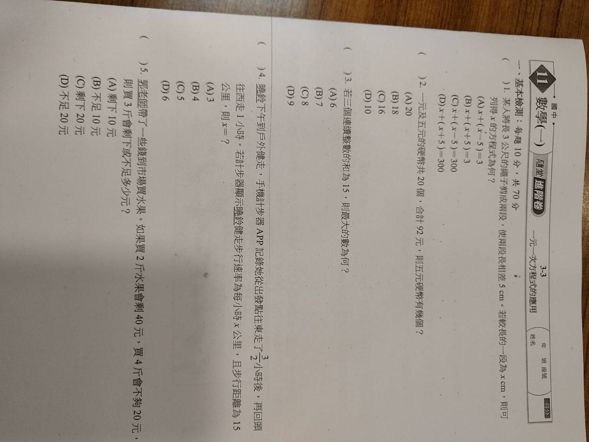
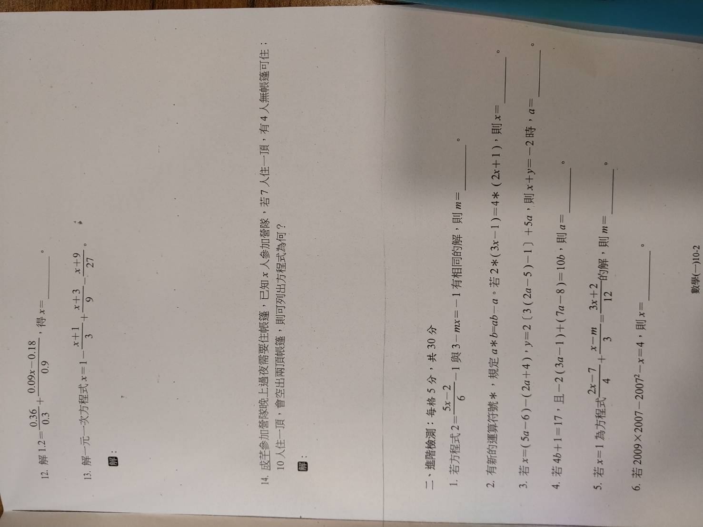
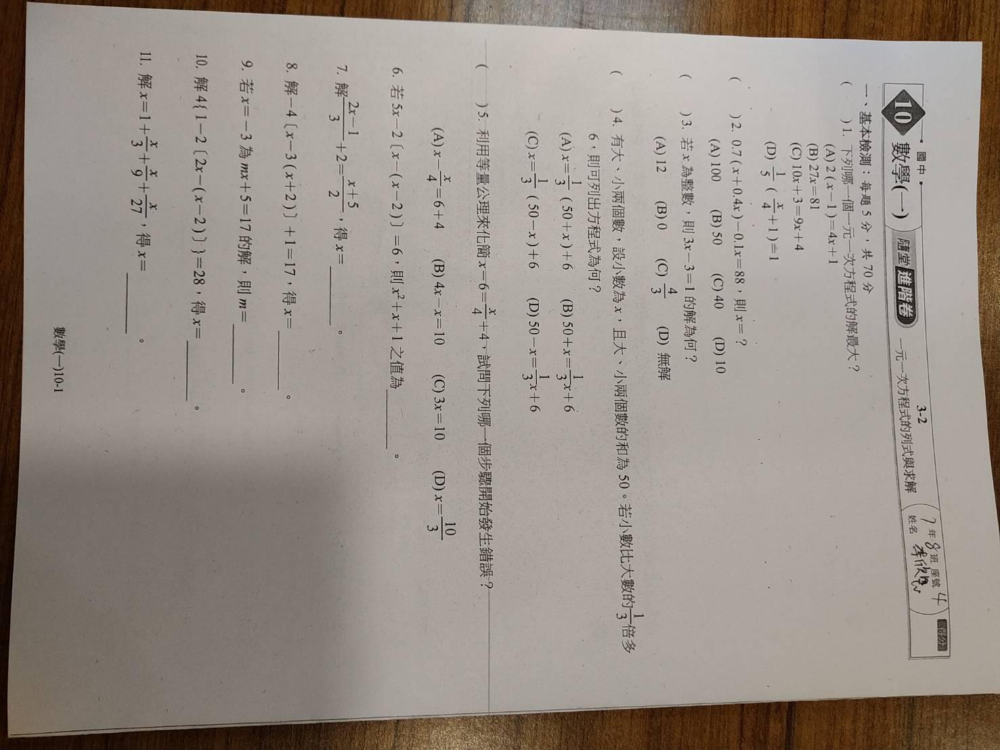

(對應圖片：188642_0.jpg)

題目內容：曉鈴下午到戶外健走，手機計步器 APP 記錄她從出發點往東走了 小時後，再回頭往西走 小時。若計步器顯示曉鈴健走速率為每小時 公里，且步行的路程為 公里，則
題目內容：郭爸爸帶了一些錢到市場買水果。如果買 斤水果會剩 元，買 斤會不夠 元，則買 斤會剩下多少或不足多少元？

(對應圖片：188643_0.jpg, 188644_0.jpg)

6. 題目內容：父親今年的年齡為兒子的 倍少 。若 年後父親的年齡為兒子的 倍，則今年父子年齡的和為 ____ 歲。